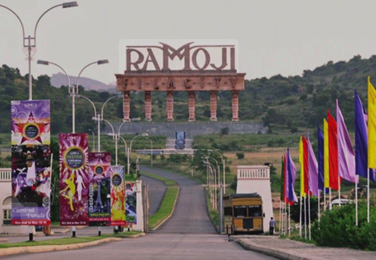
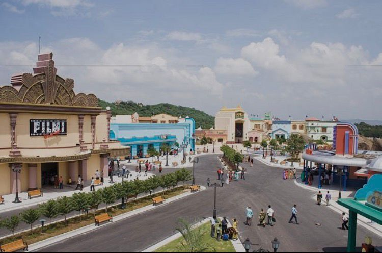

ramoji film city
🎬 Ramoji Film City – The World of Cinema Ramoji Film City is one of the larget film studios in the world, situated outside of Hyderabad, India. It was created by Ramoji Rao in 1991 and covers more than 2,000 acres. It contains everything stated or required for constructing movies, including all sets, gardens, streets, hotels, and amusement parks. Many Indian movies and TV shows have been filmed here. Visitors can see movie sets with guided tours, view live shows, and enjoy the attractions including the Bird Park, Eco Zone, and Adventure Park. Ramoji Film City is a great combination of entertainment, creativity, and fun for everyone.
 